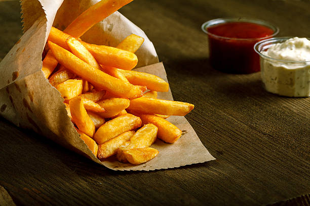

what shall follow beneath is nothing short of proof of humanities genius. Simply cutting up a potatoe and frying it.
While they may seem ordinary to begin with these are quite versatile sticks. They may be consumed using a multitude of condiments such as